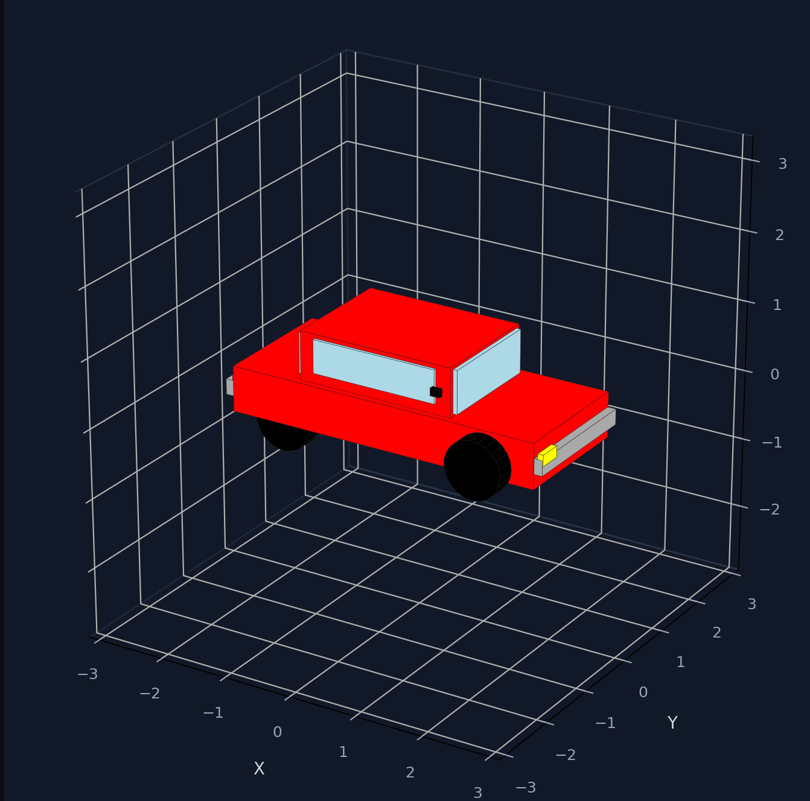
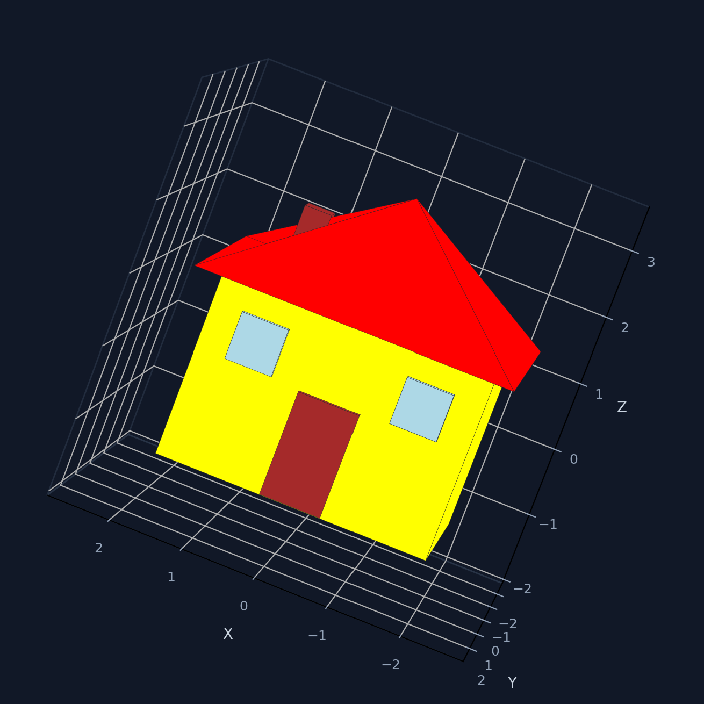
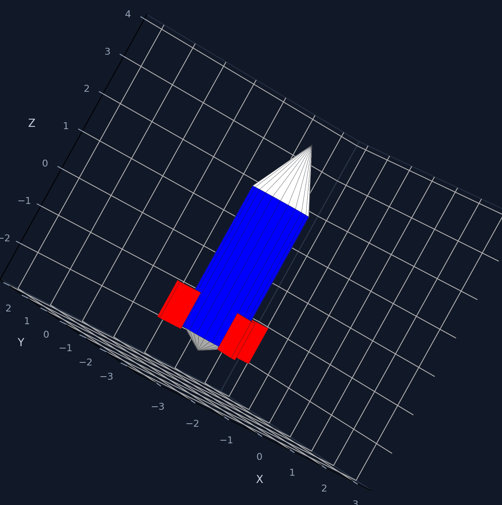
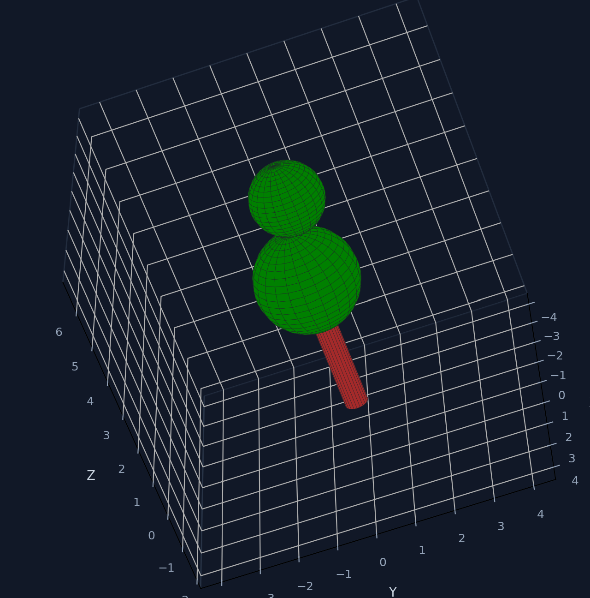
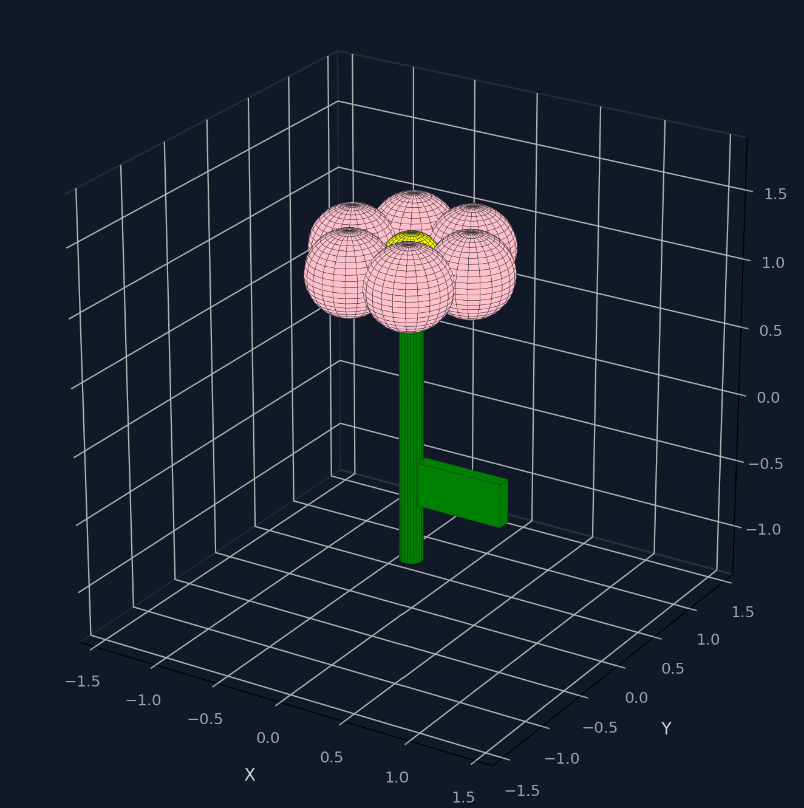
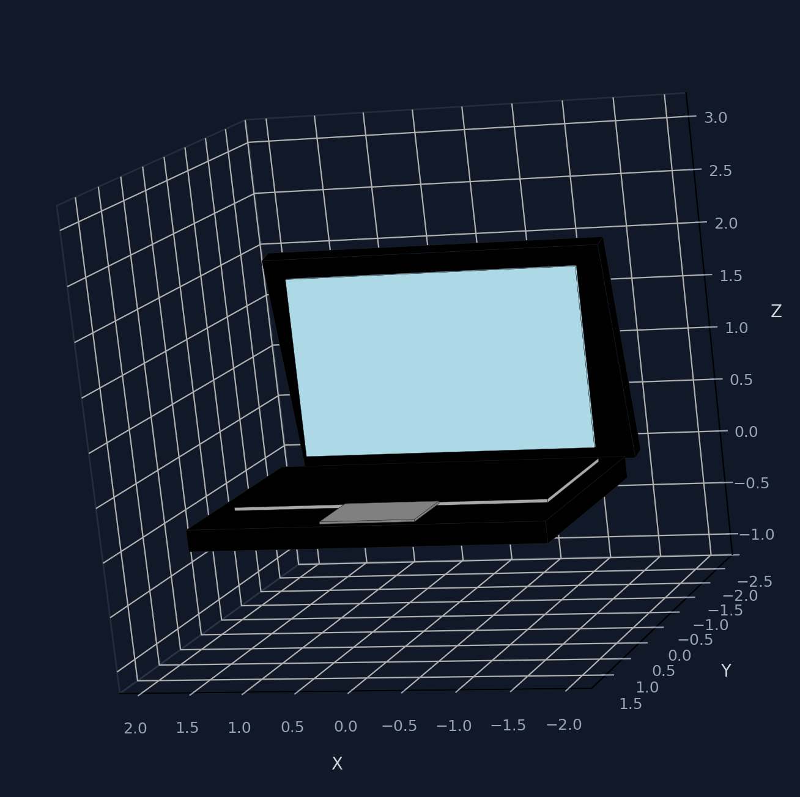

“What if making a 3D model was as easy as speaking — or showing?”
“Generate a red sports car.” No menus, no training.
Capture a real object and rebuild it in 3D.
Hand gestures rotate and zoom the live model.
Save as STL / OBJ for 3D printing.






| STEAM | Evidence in OTTO | SDG | Alignment |
|---|---|---|---|
| Science | Computer vision, speech recognition, spatial reasoning. | SDG 4 | 3D design education without prior CAD training. |
| Technology | Python, OpenCV, MediaPipe, Ollama, Gemini, Tkinter. | SDG 9 | Rapid digital prototyping and STL/OBJ export. |
| Engineering | Modular pipeline, validation, repair passes, fallbacks. | SDG 10 | Voice + gesture input for non-experts and accessibility. |
| Arts | 3D form, silhouette, UI/UX, visual presentation. | SDG 12 | Digital iteration reduces prototyping waste. |
| Mathematics | Rotation matrices, bounding boxes, proportions, scaling. | SDG 17 | Open-source stack, shareable with schools and makerspaces. |
Speak it. Show it. Spin it. Print it.
OTTO makes 3D CAD as easy as speaking and showing — putting digital fabrication into the hands of students, teachers and makers.